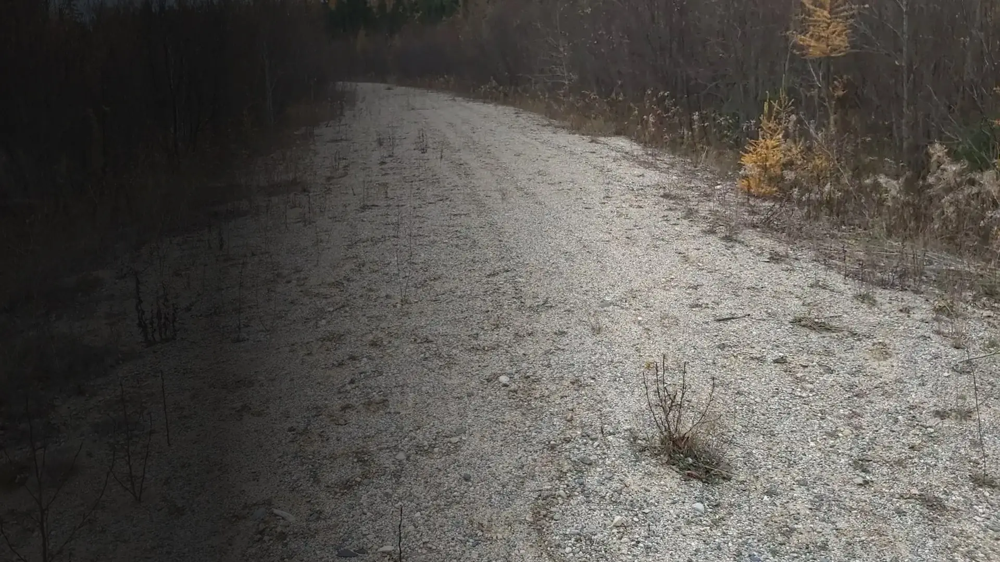
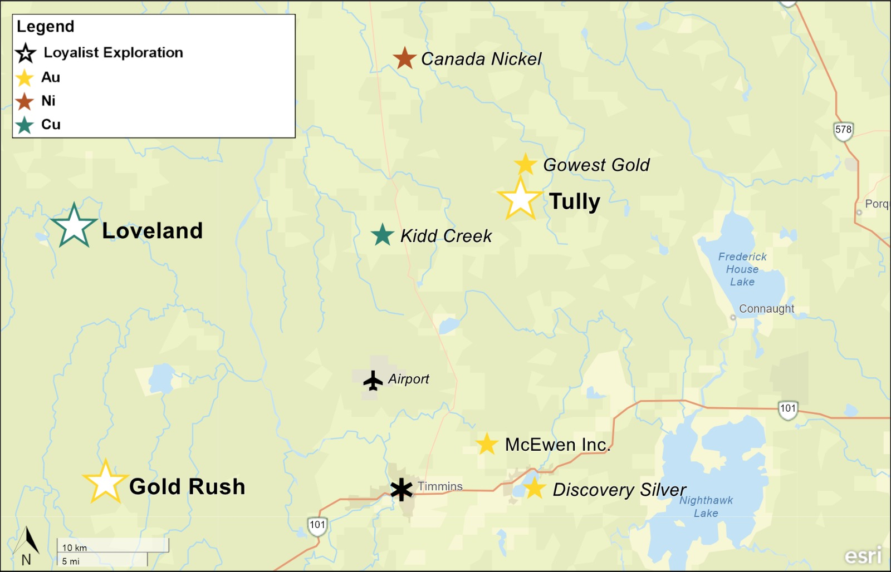
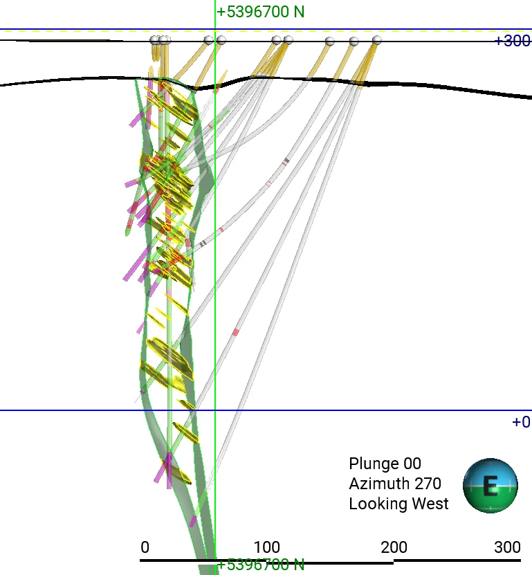
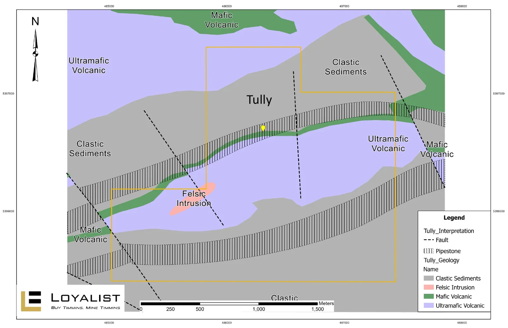
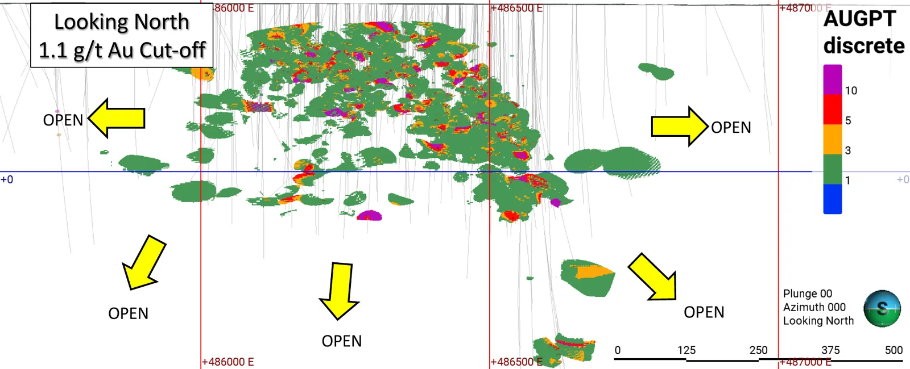
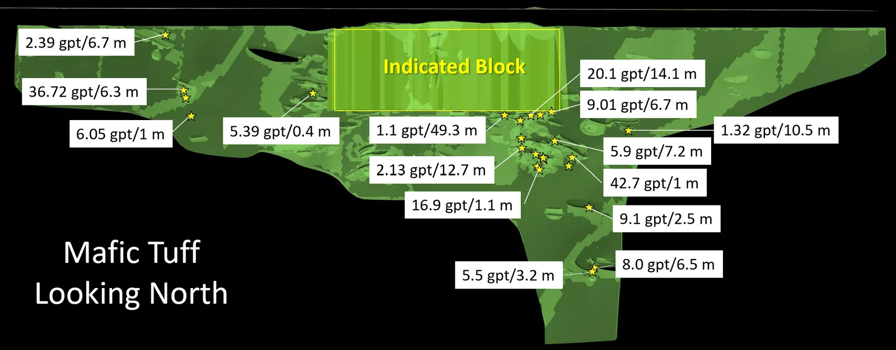
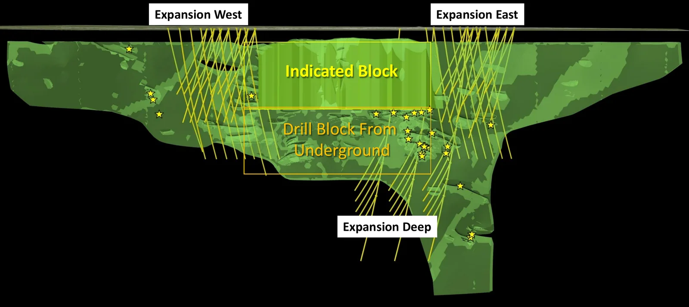
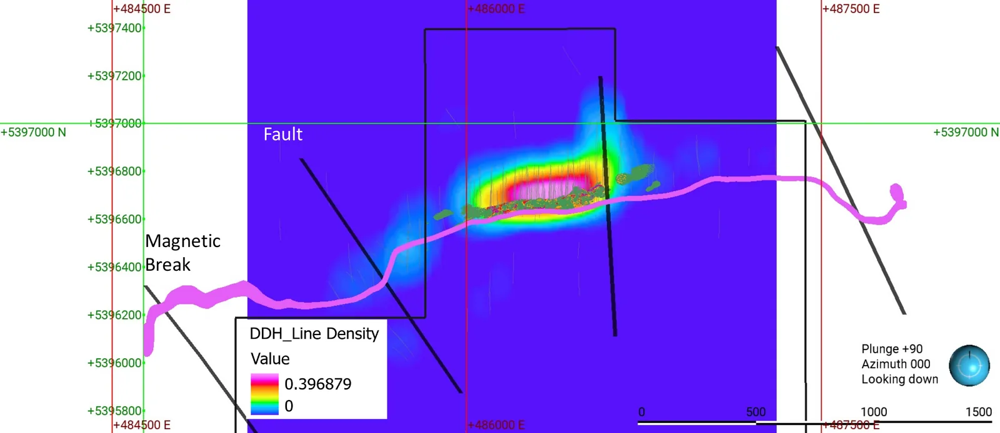
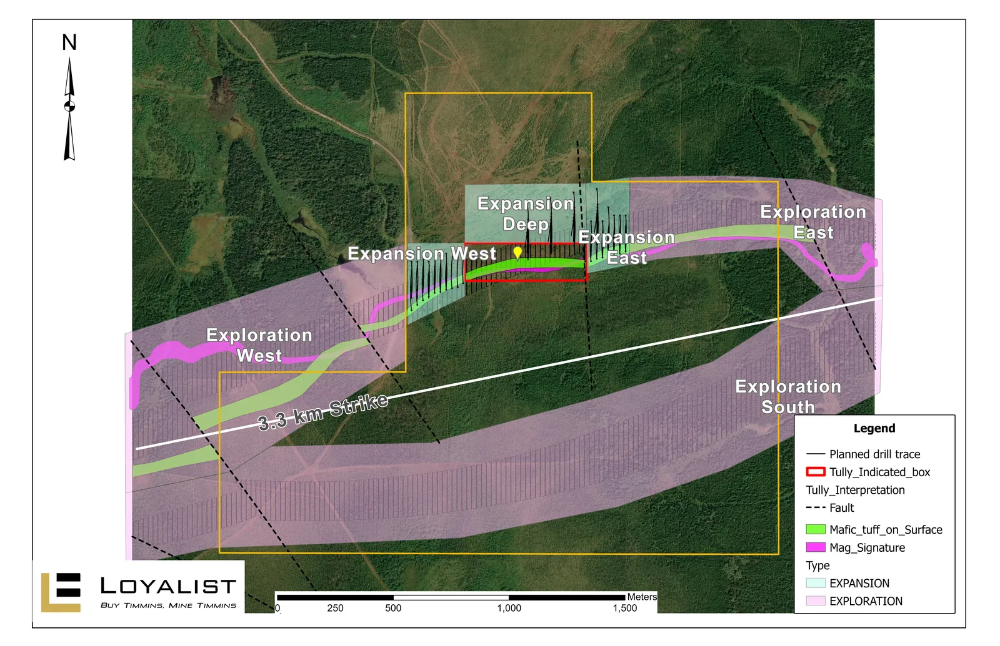
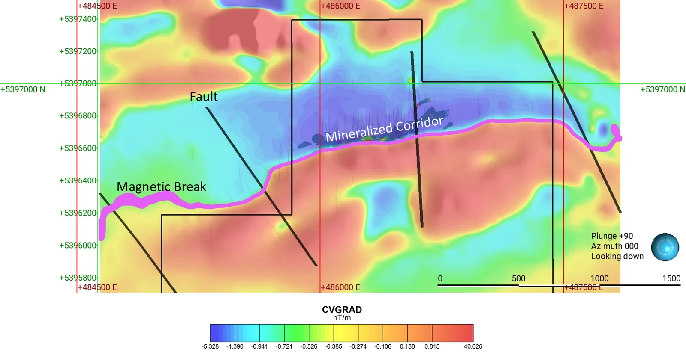

Mineable – Expandable – Explorable
A high-grade underground gold asset in the heart of the Timmins camp
- Indicated
- 164,000 oz Au 1.62 Mt at 3.16 g/t Au
- Inferred
- 62,000 oz Au 0.95 Mt at 2.03 g/t Au
- Location
- Timmins, Ontario 25 km northeast of the city
- Next milestone
- PEA, December 2026 Target date
2026 Mineral Resource Estimate, effective June 15, 2026, at a 1.1 g/t Au cut-off. Mineral Resources are not Mineral Reserves.
Overview
Tully is located approximately 25 km northeast of Timmins, within the Timmins-Porcupine Gold Camp, which includes the Dome and Hollinger mines. The project is approximately 2 km southwest of the Bradshaw Gold Project of Gowest Gold Ltd.
The 458-hectare property includes one leased mining claim and 11 patented mining claims.
Project status
- Mineral Resource Estimate completed, July 2026
- Preliminary Economic Assessment underway, December 2026 target
- Permitting activities underway

Geology
Prospective structures splay off the Porcupine-Destor Fault through the Tully area. Mineralisation at Tully occurs within a 30 m wide mafic volcanic unit with an approximate west-southwest strike and steep northerly dip. The hanging wall consists of sedimentary rocks and the footwall consists of ultramafic rocks.
As currently understood, the deposit comprises an array of shallowly inclined quartz-carbonate veins or lenses stacked 'ladder-style' within the volcanic rocks and constrained by its hanging wall and footwall contacts. The higher-grade core of the deposit extends over 600 m along strike and 400 m down dip, and plunges moderately toward the east-northeast. The mineralised veins/lenses host gold primarily within irregular pyrite clusters and also commonly as free visible gold.
The Tully property occurs within a swampy area and is covered by a blanket of glacial drift, averaging 30 m thickness, which hid the deposit from early explorers; thus, the geology is entirely derived from drillhole and geophysical data.


Mineable
The 2026 NI 43-101 Mineral Resource Estimate, and a higher-grade core that remains robust under stope constraints.
2026 Mineral Resource Estimate
2026 Tully Gold Property Mineral Resource Estimate with an Effective Date of June 15, 2026.
| Resource classification | Au cut-off (g/t) | Tonnes (k) | Au (g/t) | Contained Au (koz) |
|---|---|---|---|---|
| Indicated | 1.1 | 1,620 | 3.16 | 164 |
| Inferred | 1.1 | 948 | 2.03 | 62 |
Mineral Resources are not Mineral Reserves and do not have demonstrated economic viability.
Grade-tonnage sensitivity
Higher-grade core remains robust under stope constraints

- Indicated tonnes
- 1,014 kt
- Grade
- 4.80 g/t Au
- Contained gold
- 156 koz
Stope-constrained sensitivity, for illustrative purposes only. Not a new or updated Mineral Resource Estimate.
| Cut-off grade (g/t Au) | Classification | Tonnes (kt) | Grade (g/t Au) | Contained Au (koz) |
|---|---|---|---|---|
| 3.00 | Indicated | 407 | 9.19 | 120 |
| Inferred | 150 | 6.45 | 31 | |
| 2.50 | Indicated | 500 | 7.98 | 128 |
| Inferred | 205 | 5.43 | 36 | |
| 2.00 | Indicated | 633 | 6.78 | 138 |
| Inferred | 313 | 4.34 | 44 | |
| 1.50 | Indicated | 824 | 5.61 | 149 |
| Inferred | 436 | 3.60 | 51 | |
| 1.10 | Indicated | 1,014 | 4.80 | 156 |
| Inferred | 604 | 2.96 | 57 |
Grade-tonnage sensitivities for the underground Mineral Resource Estimate using a range of reporting cut-off grades from 1.1 to 3.0 g/t Au. The sensitivity analysis is based on the mineralized material within the stope shapes generated using a 1.1 g/t Au cut-off grade and a minimum mining width of 1.25 metres. The results are presented for illustrative purposes only and do not constitute a new or updated Mineral Resource Estimate.
The base-case Mineral Resource Estimate reported in the Technical Report, at a 1.1 g/t Au cut-off grade without the additional stope-width constraint shown above, consists of an Indicated Mineral Resource of 1.62 million tonnes grading 3.16 g/t Au containing 164,000 ounces of gold, and an Inferred Mineral Resource of 0.95 million tonnes grading 2.03 g/t Au containing 62,000 ounces of gold.
Expandable
Open along strike and at depth, with published intercepts outside the Indicated block.
Selected published intercepts outside the Indicated block
Drilling by SGX Resources, 2010 to 2013.

View all 24 selected intercepts
| Hole | From (m) | To (m) | Width (m) | Au (g/t) | Published |
|---|---|---|---|---|---|
| SGX-13-15 | 247.3 | 261.4 | 14.1 | 20.1 | Mar 18, 2013 |
| SGX-13-38 | 223.2 | 229.7 | 6.3 | 36.72 | Sep 26, 2013 |
| SGX-13-20 | 241 | 247.7 | 6.7 | 9.01 | Mar 18, 2013 |
| SGX-13-17 | 224 | 273.3 | 49.3 | 1.1 | Aug 28, 2013 |
| SGX-13-22-A | 634 | 640.5 | 6.5 | 8 | Mar 18, 2013 |
| SGX-11-86 | 420 | 421 | 1 | 42.7 | Sep 6, 2011 |
| SGX-11-78 | 309 | 316.2 | 7.2 | 5.9 | Sep 6, 2011 |
| SGX-13-18 | 295 | 307.7 | 12.7 | 2.13 | Aug 28, 2013 |
| SGX-11-87 | 517.5 | 520 | 2.5 | 9.1 | Sep 6, 2011 |
| SGX-11-90 | 459 | 460.1 | 1.1 | 16.9 | Sep 6, 2011 |
| SGX-13-18 | 319 | 330.6 | 11.6 | 1.6 | Aug 28, 2013 |
| SGX-13-19 | 345 | 354.5 | 9.5 | 1.94 | Mar 18, 2013 |
| SGX-13-18 | 254.5 | 266.5 | 12 | 1.47 | Aug 28, 2013 |
| SGX-13-22-B | 644 | 647.2 | 3.2 | 5.5 | Mar 18, 2013 |
| SGX-10-03 | 365.15 | 369.83 | 4.68 | 3.54 | Dec 17, 2010 |
| SGX-13-36 | 65 | 71.7 | 6.7 | 2.39 | Sep 26, 2013 |
| SGX-13-26 | 314.1 | 324.6 | 10.5 | 1.32 | Sep 26, 2013 |
| SGX-11-90 | 425.6 | 428.5 | 2.9 | 4.3 | Sep 6, 2011 |
| SGX-13-15 | 372 | 381 | 9 | 1.15 | Mar 18, 2013 |
| SGX-13-15 | 346.3 | 348 | 1.7 | 4.7 | Mar 18, 2013 |
| SGX-13-38 | 245.2 | 249.5 | 4.3 | 1.43 | Sep 26, 2013 |
| SGX-13-38 | 297.6 | 298.6 | 1 | 6.05 | Sep 26, 2013 |
| SGX-11-85 | 429 | 430 | 1 | 3.1 | Jul 11, 2011 |
| SGX-10-01 | 240.5 | 240.9 | 0.4 | 5.39 | Dec 17, 2010 |
Widths are drilled widths as published, not true widths. SGX's 2013 releases interpreted true widths as 65% to 80% of drilled widths and reported assays uncut.
Planned drilling for expansion

Drill density

Explorable
3.3 km of strike, and a magnetic break that correlates with the mafic tuff.
Tully expansion and exploration

Magnetics
Magnetics show a break that correlates with the mafic tuff.

Some of the potential quantities and grades disclosed are conceptual in nature, there has been insufficient exploration to define a mineral resource on all of the mineralization at the mineral property, and it is uncertain if further exploration will result in certain targets being delineated as a mineral resource.
Development road map
Illustrative schedule. Q3 2026 to Q4 2029, October 2026 planning basis.
| Activity | Timing |
|---|---|
| 2026 MRE announced | July 2026 |
| PEA (Dec. 2026 target) | Q3 – Q4 2026 |
| Geological interpretation | Q3 2026 – Q2 2027 |
| Resource expansion drilling | Q4 2026 – Q2 2028 |
| Exploration programs | Q4 2026 – Q4 2029 |
| Permitting & baseline studies | Q3 2026 – Q2 2029 |
| Portal development | Q1 – Q4 2028 |
| Underground development | Q3 2028 – Q4 2029 |
| Bulk sample | Q1 – Q3 2029 |
| Toll milling (potential) | Q2 – Q4 2029 |
| Production decision window | Q3 – Q4 2029 |
Conceptual planning scenario only. All future activities depend on studies, financing, permitting, engineering and access agreements. Production decision ≠ first gold.
2026-2027 objectives
- Complete the Preliminary Economic Assessment
- Preliminary mine and infrastructure design
- Advance permitting process
- Conclude ore processing options
- Advance financing alternatives to fund production capex
- Commence expansion and exploration drill programs
- Continue First Nations consultations
Why operating cash flow from Tully matters
The foundation for executing the Buy Timmins, Mine Timmins strategy and delivering sustainable returns to shareholders.
-
Self-funded growth
Tully production cash flow funds organic expansion without continuous equity raises
-
Reduced dilution
Internal cash generation protects existing shareholders and improves capital structure
-
Shareholder returns
Positive free cash flow enables potential dividends and direct returns of capital to shareholders
-
Balance sheet strength
Strengthens liquidity, reduces reliance on debt, and supports a sustainable capital return policy
-
Portfolio unlock
Supports advancement of DeSantis and other Timmins assets under the Buy Timmins, Mine Timmins strategy
Tully is not in production. Any future cash flow depends on studies, financing, permitting, engineering and access agreements.
Qualified Person
Curtis Ferron, P.Geo. (ON), independent consultant for Loyalist, who is a "Qualified Person" as defined by NI 43-101, has reviewed and approved the technical content of this page.
Forward-looking statements
This page contains "forward-looking information" (within the meaning of applicable Canadian securities laws) and "forward-looking statements" (within the meaning of the U.S. Private Securities Litigation Reform Act of 1995). Such statements or information are identified with words such as "anticipate," "believe," "expect," "plan," "intend," "potential," "estimate," "propose," "project," "outlook," "foresee," or similar words suggesting future outcomes or statements regarding an outlook, and include statements regarding the planned preparation of a NI 43-101 Preliminary Economic Assessment (the "Technical Report") on the Company's Tully Property and the proposed work on the projects. Factors that could cause actual results to differ materially from such forward-looking information include, but are not limited to, the Company's inability to complete the financings necessary to complete proposed work and preparation of the Technical Report, failure to identify mineral resources, failure to convert estimated mineral resources to reserves, the inability to complete a feasibility study which recommends a production decision, the preliminary nature of metallurgical test results, delays in obtaining or failures to obtain required governmental, environmental, or other project approvals, political risks, inability to fulfill the duty to accommodate First Nations and other Indigenous peoples, uncertainties relating to the availability and costs of financing needed in the future, changes in equity markets, inflation, changes in exchange rates, fluctuations in commodity prices, delays in the development of projects, capital and operating costs varying significantly from estimates, and other risks involved in the mineral exploration and development industry, capital market conditions, restrictions on labour and international travel, and supply chain issues, as well as those risks set out in the Company's public documents filed on SEDAR+. Although the Company believes that the expectations reflected in the forward-looking information or statements are reasonable, prospective investors in the Company's securities should not place undue reliance on forward-looking statements because the Company can provide no assurance that such expectations will prove to be correct. Forward-looking information and statements contained on this page are as of the date of the Company's October 2026 corporate presentation, and the Company assumes no obligation to update or revise this forward-looking information and statements except as required by law.
Cautionary note to U.S. investors
In the event that we use certain terms on this page, such as "resource", "measured resource", "indicated resource" and "inferred resource", U.S. investors are cautioned that, while such terms are recognized and required by Canadian securities laws, the United States Securities and Exchange Commission does not recognize them. Under U.S. standards, mineralization may not be classified as a "reserve" unless the determination has been made that the mineralization could be economically and legally produced or extracted at the time the reserve determination has been made. U.S. investors should not assume that all or any part of measured or indicated resources will ever be converted into reserves. In addition, "inferred resources" have a great amount of uncertainty as to their existence and as to whether they can be mined legally or economically. Accordingly, information concerning descriptions of mineralization on this page may not be comparable to information made public by companies that are subject to the SEC's Industry Guide 7.